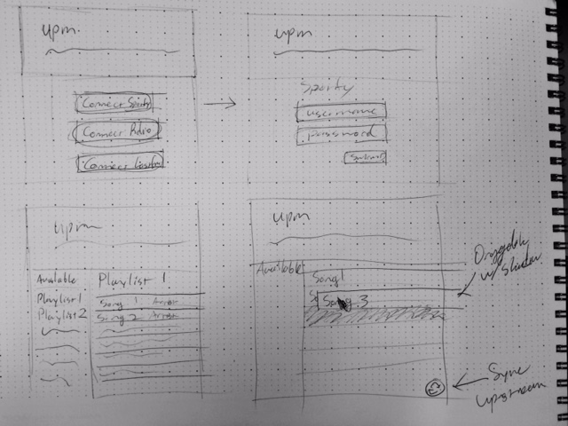

The Web Services
Future Features
- User accounts, with a backend
- Propagate playlist changes across music services
- Expand service offerings to services with one-to-one mappings (i.e. where there are more than one version of a given song), like YouTube or Grooveshark.
Features for this Version of the Project
- Load playlists from music streaming services
- Edit these playlists with a drag and drop interface
- Push these back upstream, integrating remote changes
